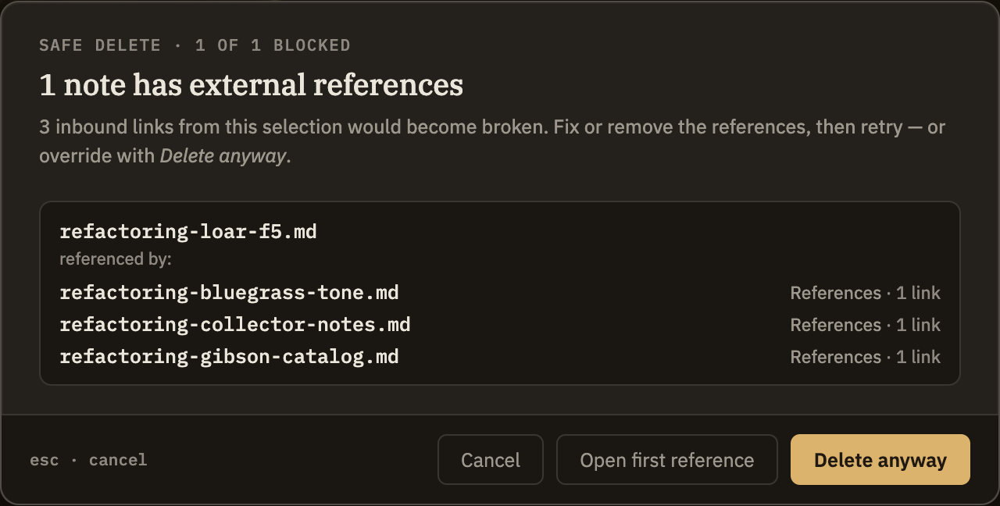

Docs/Refactoring/Safe delete & dangling links
Safe delete & dangling links
When your notes link to each other, deleting one can leave others pointing at something that no longer exists. Before a delete goes through, Minerva checks for exactly this and warns you first.
The warning before you delete
Whether you're deleting one note, several at once, or a whole folder, Minerva looks for any other notes — outside what you're removing — that still link to it. If it finds none, the delete proceeds as normal. If it finds some, a warning appears listing the notes that would be left with a link going nowhere.
From that warning you can:

If you choose Delete anyway, the notes that linked in are left exactly as they were — their links now lead nowhere. Minerva won't rewrite or remove them automatically, so it's worth cleaning them up when you get a chance. Using Open the first reference before you delete is the easiest way to handle them ahead of time.